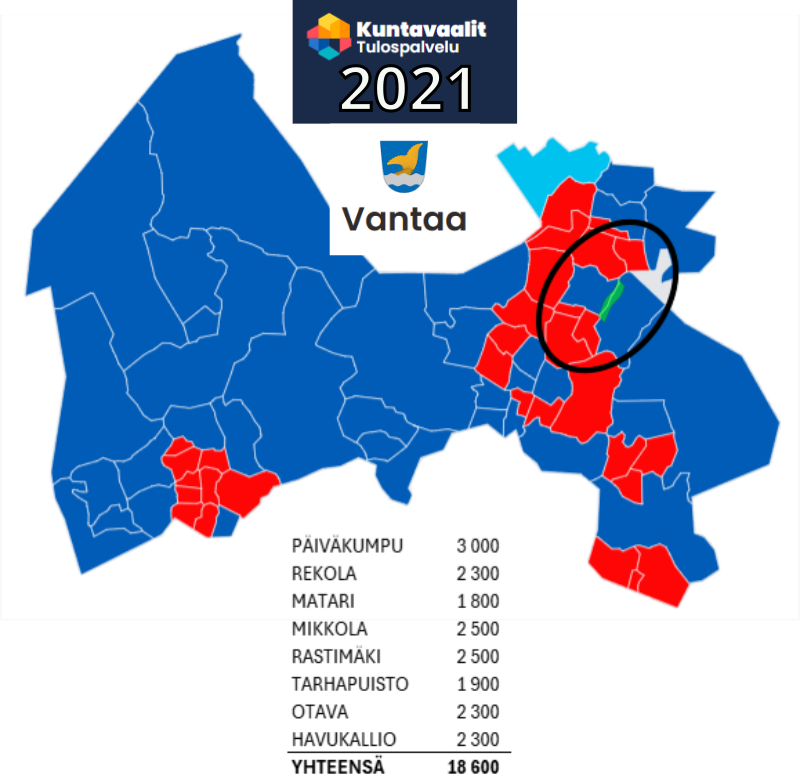

Alue on osa laajempaa, 20 hehtaarin kokoista metsäaluetta.
Rantavyöhyke on luokiteltu luontoarvoiltaan arvokkaaksi alueeksi.
Asemakaavamuutoksen toteutuessa rantaan jäisi vain 100-150 metrin leveydeltään kaistale vanhaa metsää.
Alue on nykyiselläänkin kapea, vain 300 metriä, ja sen poikki kulkee suosittu hiihto- ja kävelyreitti, joka tarjoaa esteettömän pääsyn metsäiselle alueelle. Alueen luontoarvot tulee nähdä kokonaisuutena. Jos metsä pirstotaan, seurauksena on eläinten elinalueiden supistuminen ja jokimetsän luonnonmaiseman pysyvä tuhoutuminen.
Keravanjokivarren metsä kokonaisuutena saattaisi myös soveltua METSO-suojeluohjelmaan.
Virkistysalueen käyttäjät ja mielipide kaavamuutoksesta
- 2 466
-
Nimeä ulkoilevan väestön luontokohteen rakentamista vastustavassa
kuntalaisaloitteessa.
Lukumäärä kasvaa tietoisuuden lisääntyessä
- 8
- Äänestysaluetta on kävelymatkan päässä luontokohteesta
- 18 600
- Äänioikeutettua perheineen nauttii alueen ainutlaatuisista virkistysmahdollisuuksista

- 2 910 %
-
Aloitteen kannattajien lukumäärä verrattuna kaikkiin Vantaan rakentamista vastustaviin kuntalaisaloitteisiin 2023->
- 225 %
-
Aloitteen kannattajien lukumäärä verrattuna Vantaan kaikkiin muihin kuntalaisaloitteisiin yhteensä 2023->
- 1 280 %
-
Aloitteen kannattajien lukumäärä verrattuna seuraavaksi suosituimpaan Vantaan alueen kuntalaisaloitteseen 2023->